Fast-dDrive SASD 训练数据集 v2 — 是什么、怎么来的、怎么喂给模型
生产格式:wod_e2e_sasd_*_v2_ar(ArrayRecord,13 原字段 + 预计算
image_embeds)· 全量 415,663 帧 · 本站 12 个样本(10 train + 2 val)
均通过 round-2 验证:12 列 vs 从 raw 重跑 bit-exact + embeds 从像素复算两层判据
pixel_values,v2 还存了它们的 frozen-ViT 输出 image_embeds ——
训练时直接用,pod 上不再跑 ViT)+ 文本 prompt(任务指令、导航命令、3 秒自车历史)
+ JSON 答案(critical_objects / explanation / future_meta_behavior / 真值轨迹),
外加一套 SASD 训练结构(哪些 token 可加噪、各属哪个 section、权重和噪声调度)。v1 → v2 变了什么
| AR v1(已退役,仅存 GCS) | AR v2(生产格式) | |
|---|---|---|
| 字段 | 12 数组 + 3 标量(只有像素) | 同样 13 个字段全保留 + image_embeds bf16 [168,2048] |
| 训练时图像处理 | 每 step 在 host 跑 frozen ViT(数据循环被卡住) | 读现成 embeds → 纯 IO;pod 零 ViT/transformers 依赖 |
| v6e-1 实测吞吐 | 65 TFLOP/s/device | 83.4 TFLOP/s/device(+28%) |
| 谁能读 | 无训练路径读它(都走 parquet) | make_sasd_loader 按扩展名自动探测;FSDP harness 与 MaxText 直接消费;iterator 状态进 ckpt → resume 续流不重放(v6e-1 实测续训 12..17) |
| split | train only | full / 50k / 400 / val 479(训练格式带 target) |
① 处理后的一条记录长什么样
14 个字段。注意:input_ids 中的"图像部分"只是 56×3 个相同的占位符
<|image_pad|>(id 151655);像素在 pixel_values,
模型实际吃的图像表示在 image_embeds(forward 时散射到占位符位置)。
| 字段 | 形状/类型 | 含义 | 训练时用途 |
|---|---|---|---|
sample_id | str | WOD-E2E frame id（frame.context.name），可 join 回 GT | 追溯/调试 |
input_ids | [1184] int64 | 完整 chat-template token 序列（结构见下文布局图） | embed 后做模型输入 |
labels | [1184] int64 | answer 区间 = token id；其余 -100（不计 loss） | loss 目标 |
rbi | [1184] int32 | response block index：prompt=-1；answer 按 section 切成 ≤32 value-token 的块 | 构建注意力 mask + 分配 section |
turn | [1184] int32 | 块边界处 +1 的递增序号 | 训练 mask 的 turn 规则 |
scaffold | [1184] bool | JSON 骨架位置（key、引号、分隔符）——永不加噪、永不训练 | 加噪时冻结 |
weight_vec | [1184] f32 | 逐 token loss 权重：CO 1.5 / explanation 1.0 / fmb 2.0 / trajectory 3.0 | section-weighted CE |
block_alpha / block_beta | [7] f32 | 每块 Beta(α,β) 噪声调度：CO(1,2) exp(1,1) fmb(1,1.5) traj(2,1) | 在线加噪采样 mask 比例 |
position_ids | [3,1184] int32 | 3D M-RoPE 位置（temporal/height/width 三通道） | RoPE cos/sin |
vision_mask | [1184] bool | vision token 位置（image_pad / vision_start / vision_pad） | 辅助/调试 |
pixel_values | [672,1176] f16 | 3 张图的像素 patch：每行=14×14×3 通道×2 时间帧，CLIP 归一化（可逆；保留它使 embeds 永远可独立复验） | 复验源（v2 训练不再喂 ViT） |
image_grid_thw | [3,3] int64 | 每图 (t,h,w) patch 网格 = [1, 16, 14] | 索引 + M-RoPE |
image_embeds ⭐v2 | [168,2048] bf16 | frozen ViT 输出离线预计算(fp32 highest → bf16,单份;loader `concat([ie,ie])` 翻倍到 336)——训练时直接散射到占位符位置,pod 上不再跑 ViT | 模型的图像输入 |
L / n_blocks | 标量 | 序列长 / response 块数 | 静态形状 |
一个样本的序列布局(样本 00,L=1184 个 token 各是什么)

上条:区域/section(灰=prompt 文本,蓝=图像占位区,橙/绿/紫/红=答案四个 section,黑=MASK pad)。 下条:训练角色——深灰 scaffold(JSON 骨架,冻结)、红 value(被加噪+训练的内容)、黑 pad。
② 从 raw 数据怎么处理出来的(每级带验证)
Stage 0 — 原始数据
WOD-E2E tfrecords(263 train + 93 val shards,~1.1 TB)。每帧一个 E2EDFrame proto:8 路相机 JPEG、16 点自车历史(@0.25s)、20 点未来轨迹(@4Hz,真值)、导航 intent、rater 偏好轨迹。
/home/kaiwen/data/fast-ddrive/waymo/
Stage 1 — 抽取 + 造 prompt/target
✅ prompt 对官方 sample.json 逐字节验证
fast_ddrive/data/convert_wod_e2e.py --with_target:取左前/正前/右前 3 路相机存 JPEG;固定指令模板 + 导航命令 + 7 点自车历史(@0.5s)拼 prompt;target JSON 里 trajectory=真值 5 点@1s,future_meta_behavior 派生,critical_objects/explanation 是伪标签(已知限制,可 teacher-distill 升级)。val split 加 --rated_only(479 个 rater 评分帧)。
输出:train/val JSON + JPEGs
Stage 2 — Token 化 + SASD 结构
✅ round-2:12 列 vs 从 raw 重跑 bit-exact
jax_ddrive/eval/prep_train_jax.py:HF processor(chat template;每图 16×14 patch 网格);process_gpt 规范化 answer;标 labels;deep-scaffold 检测 scaffold/value、按 section 切块(rbi/turn)、配权重和 Beta(α,β);3D M-RoPE position_ids;pad 到 L=1184。
输出:每帧一个 npz(12 个数组)
Stage 3 — Parquet(bit-exact 真相源)
✅ 三方计数对账;packed=唯一本地 parquet 源
prep_to_parquet.py(原始字节 blob + shape 列,无损)→ pack_parquet.py(纯 concat 合并成 130 个文件,内容不变)。
输出:wod_e2e_sasd_full_packed/ 178G
Stage 4 — AR v2:预计算 ViT embeds ⭐
✅ 构建期四道内建检查:每 shard jit-vs-eager ViT 抽查(观测 ≤5e-6,硬上限 1e-3)· bitwise recompute + bf16 roundtrip · 计数对账 · AR↔parquet 逐字节(test_ar_pipeline.py)
jax_ddrive/scripts/parquet_to_ar_with_embeds.py(~19 样本/s,原子可断点续):对每帧跑 frozen ViT(fp32 highest)→ bf16 存为 image_embeds,连同 13 个原字段一起打成 ArrayRecord(tf.train.Example)。这就是 TPU 训练直接消费的生产格式。
输出:v2 AR 四个 split(下表)
v2 AR 四个 split(本地 + GCS 镜像)
| 目录(/home/kaiwen/data/fast-ddrive/hf/) | 行数 | shards | 大小 | 角色 |
|---|---|---|---|---|
wod_e2e_sasd_full_v2_ar | 415,663 | 130 | 368.7 GB | 生产训练(full) |
wod_e2e_sasd_50k_v2_ar | 50,331 | 787 | 44.7 GB | shakeout 训练 |
wod_e2e_sasd_val_v2_ar | 479 | 8 | 437.9 MB | val(rated 帧,训练格式带 target) |
wod_e2e_sasd_v2_ar | 400 | 7 | 363.2 MB | 烟测/单测 |
image_embeds 用存储的像素重新过
frozen ViT(fp32 highest → bf16)比对,两层判据 = bitwise ≥98.5%(实测 ~99.8%)且每个
mismatch ≤1.5× 自身 bf16 ulp 或 |Δ|≤2e-3(全部通过;bf16 级全局 rel 仅作诊断报告——单个大幅值
元素的 1-ulp 翻转就有 ~2⁻⁸ 相对量级,对它设门限是范畴错误)。端到端旁证:同一 prep 管线的
479 帧 val 上 JAX/PyTorch 官方指标 ADE@3s 0.839/0.814、RFS 7.93/7.91 持平。③ 训练时怎么喂给模型(每个 train step,v2 路径)
1. 读取: make_sasd_loader 按扩展名自动探测 AR(lazy 随机访问,全量可用)/
parquet;按 host 切分全局 shuffle 流,确定性、可断点续;iterator 状态随 checkpoint 保存,
resume 续流不重放。batch 里直接带 image_embeds (B,168,2048) bf16。
2. 在线加噪(noise.make_batch): 每个 response 块抽
t ~ Beta(α,β) → 以概率 p=(1-ε)t+ε 把该块的 value token 替换成
|<MASK>|(scaffold 冻结;<|im_end|> 必 mask)。轨迹块 α,β=(2,1)
→ 平均被 mask 更多(任务更难、权重也最高 3.0)。
3. 拼接 doubled 序列(2L=2368),每样本两行:
row 0 (mdm): [ x_t = 答案被随机 mask | x_0 = 干净原序列 ] ← labels: 只在被 mask 的位置 row 1 (comp): [ x̄_t = 互补位置被 mask | x_0 = 干净原序列 ] ← labels: 互补位置
4. 图像(v2): 直接取记录里的 image_embeds →
concat([ie,ie]) 翻倍到 [336,2048] → 散射到两行序列里 <|image_pad|>
的位置。不再有任何 ViT 前向(v1 在这里每 step 跑一次 frozen ViT —— 数据循环因此从
65 提到 83.4 TFLOP/s/device)。
5. 位置 & 注意力: position_ids 平铺两份 → M-RoPE cos/sin(contiguous-chunk 布局, 非 MaxText 内建 interleaved);由 rbi/turn 构建 [2L,2L] hybrid block-causal mask(下图)。
6. loss:
Σ section_weighted_CE(noisy 半边 logits, labels, w) + causal_CE(clean 半边 row0, 原 labels),
除以 2×答案 token 数。消费方:NNX FSDP harness(train_tpu.py)和
MaxText objective="sasd"(fork @ a645b25,vendored 自包含 sasd_data/)。

训练注意力 mask(样本 00):左上=noisy 半边(prompt 整块双向 + 答案逐块); 右上=noisy→clean 只看更早的 turn(阶梯);右下=clean 半边标准 causal。
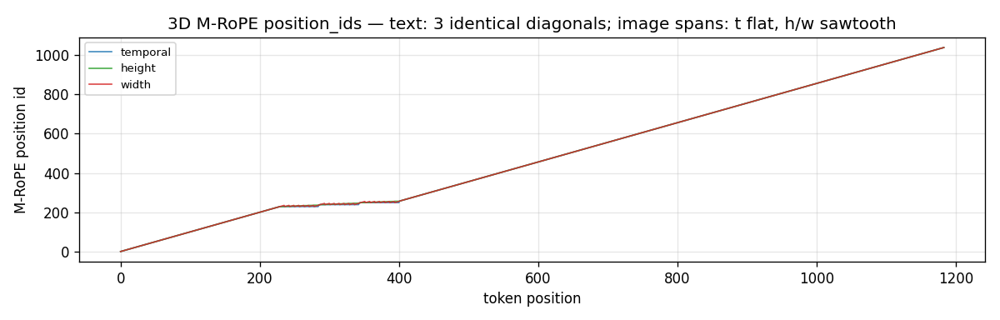
3D M-RoPE:文本区三通道重合对角线;图像区 t 持平、h/w 锯齿;图像段只前进 max(h,w),所以末端位置 ≈1040 < 1184。
每个样本页底部都有"加噪后模型实际看到的序列"文本示例(mdm 行 + 互补行)。
④ 12 个已验证样本(点进去看完整编码;缩略图 = 原图 | 像素重建 | embeds PCA)
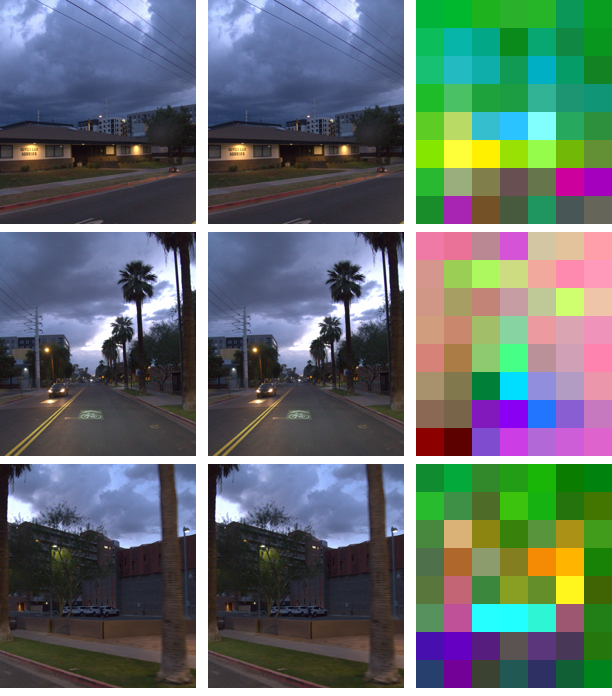
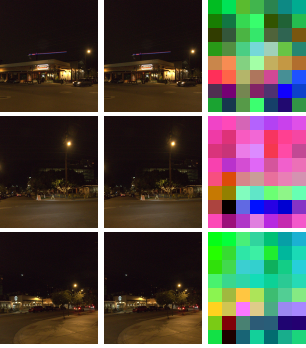
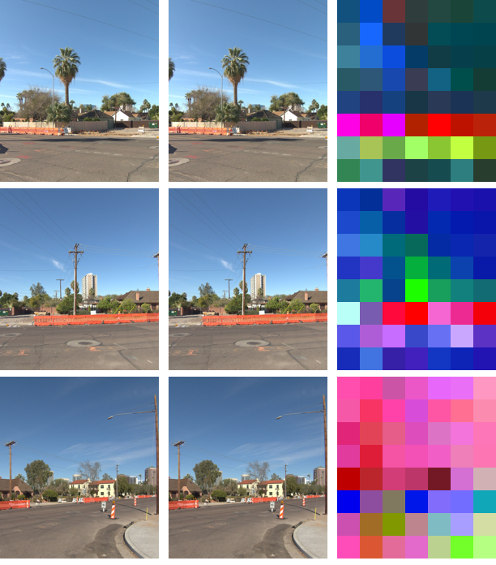

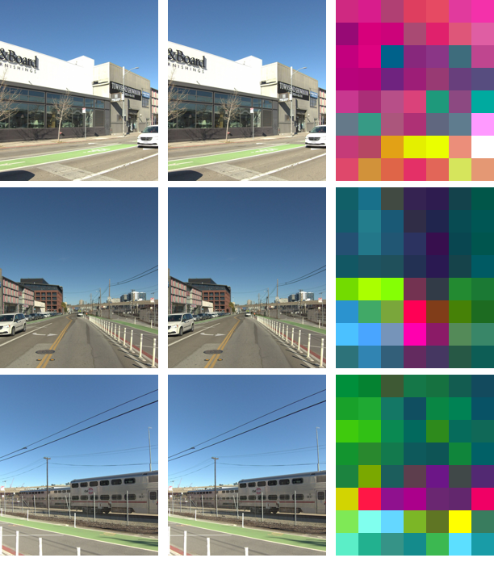
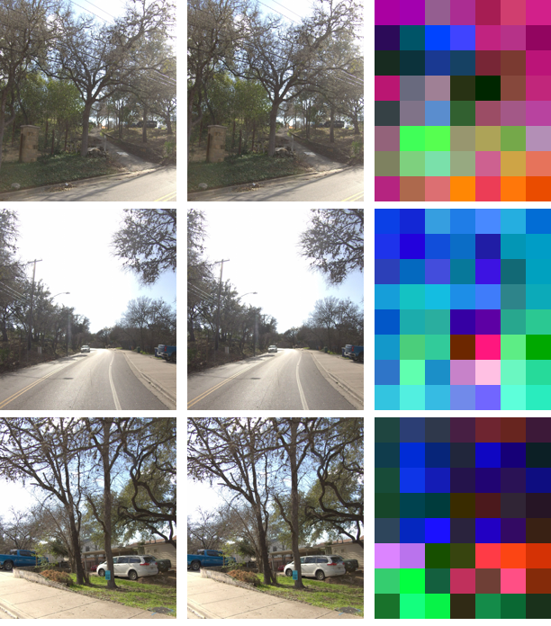
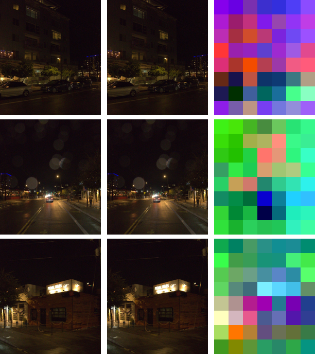
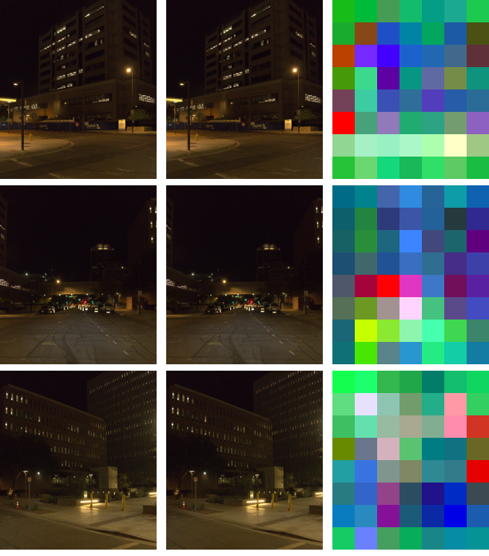
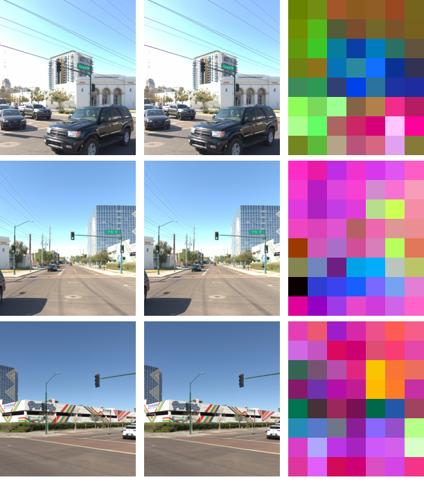
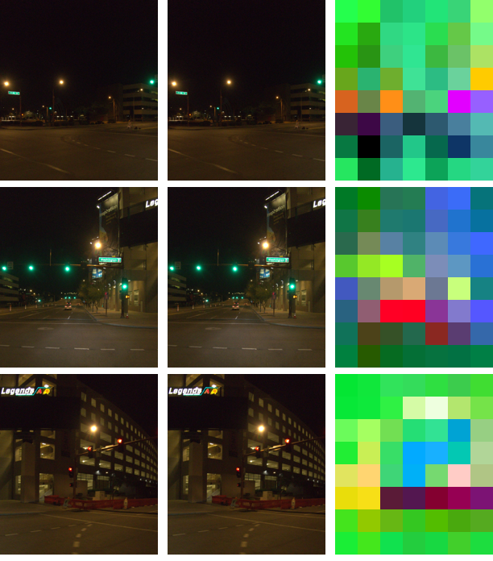
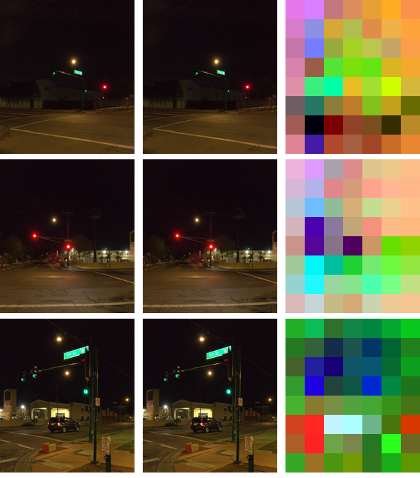
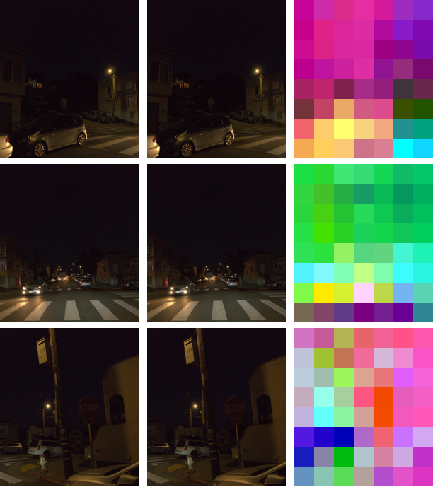